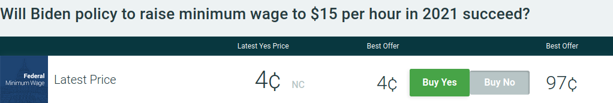

Using this tool, you can set up alerts that will notify you via Twitter when a certain condition is met in a market.
PredictIt Scout utilizes freely available Twitter and PredictIt APIs to monitor markets and send your Twitter account direct messages.
Let's say you are interested in monitoring the below market. In this case, you could use PredictIt Scout to create an alert that will automatically send you a Twitter direct message as soon as the Buy Yes price goes above 4¢. In fact, PredictIt Scout provides multiple ways to track markets. Find out more once you have made an account!
*Note that you will need a Twitter account to use PredictIt Scout, and the account must be configured to accept direct messages from @predictit_scout.